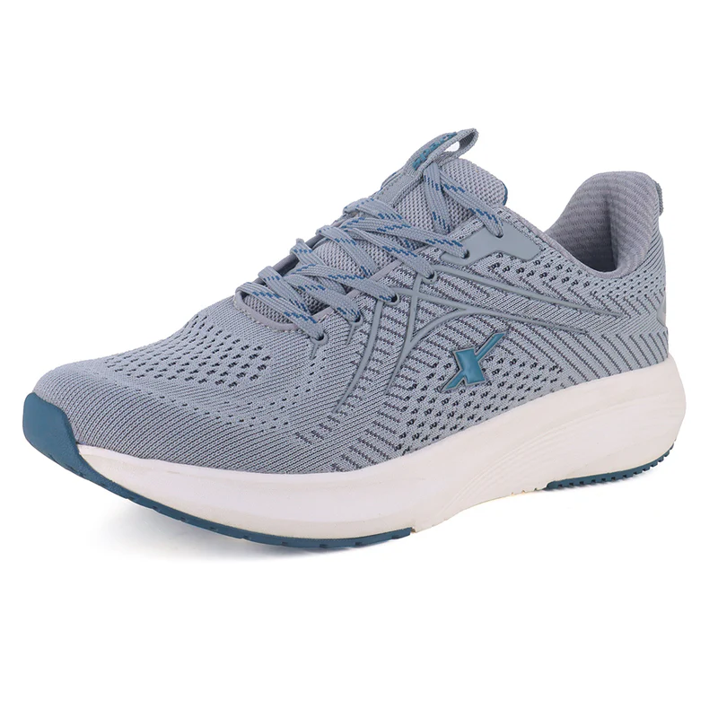

<div class="row" >

    @for (item of [1,2,3,4,5,6,7,8,9,10,11,12,13,14,15,1,1,11,1,1] ;track item) {
        <div class="container-fluid col-md-3 p-5" >
          
            <div class="card float-start" style="width: 350px;" >
                <div class><mat-icon class="float-end  m-3">favorite_border</mat-icon></div>
                
                <div class="card-body">
                    <div class="card-title my-3">SPARX Running Shoes for Men SM 834</div>
                     <div class="card-text d-inline "><h2 class=" d-inline">555</h2></div>
                     <div class="card-text d-inline  float-end"><button class="btn btn-primary">Add to cart</button></div> 
                    </div>
                </div>
            </div>
           
    }

